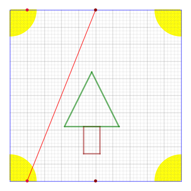
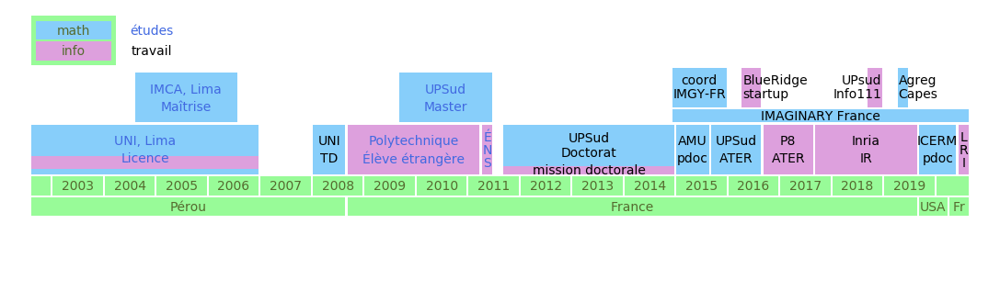

Alba Marina Málaga Sabogal
Candidature au poste de maître de conférences n°1320


Parcours
Enseignement
Expériences d’enseignement
| 2018 |
U Paris-Sud (60h) |
CEV Informatique |
|
|
L1, TD/TP |
|
|
C++, Jupyter |
|
|
|
| 2016–2017 |
U Paris 8 (192h) |
ATER Informatique |
|
|
L2, M1, accessibilité |
|
|
Wordpress, Python |
|
|
|
| 2015–2016 |
U Paris-Sud (192h) |
|
| 2014 |
U Paris-Sud (96h) |
|
| 2008 |
UNI (192h) |
|
Au total, \(>\) 600 h dont 192h responsable de cours.
Cours donnés :
En L1 MPI (chargée de TD/TP) : Intro. à l’informatique (C++)
En L2 MIASHS Accessibilité/Géographie/Langage:
- Calcul formel
- SageMath, pour lequel il faut apprendre le Python
- Mathématiques numériques :
- langage Python - calcul scientifique avec numpy/scipy
En M1 MIASHS Accessibilité/Géomatique:
- Programmation objet 1 et 2
- Java pour un public majoritairement neoinformaticien
- CMS et frameworks accessibles
- Wordpress, y compris developpement de thèmes/plugins
Mais aussi: TD de géométrie et analyse en PCSO et d’autres cours de mathématiques
Mon ATER à l’Université Paris 8 Vincennes Saint-Denis

Charge de travail équivalente déjà à un MCF :
- seule personne en charge de tous mes cours
- préparation de deux cours pour une nouvelle formation (la licence MIASHS)
- encadrement d’un étudiant de géomatique en alternance
L’accessibilité :
- thème principal du labo THIM, des formations MIASHS
- des étudiants aveugles en master
- j’ai dû revoir de fond en comble ma façon d’enseigner
Le PPN du DUT MMI
Dans l’organisation actuelle : 5 catégories, 2 UE par semestre,
un enseignement progressif à partir des bases.
| Communication, culture et connaissance de l’environnement socio-économique |
Com./écriture |
bases |
|
Esth./vidéo |
approfondissement |
| Culture technologique et développement multimédia |
Info./réseaux |
maîtrise |
|
Transversal |
|
|
Professionnalisation |
approche professionalisante |
Cours d’autres catégories
La catégorie esthétique/vidéo:
- pas du domaine des MCF27 en général mais j’y vois l’opportunité pour des interactions enrichissantes
- j’ai déjà scripté la création de fichiers svg en SageMath/Python et je produis des fichiers
pour l’impression 3D avec Blender
- je pourrais peut-être faire une intervention ?
un atelier conjoint ?
La catégorie transversale:
Culture scientifique et traitement de l’information - cours de mathématiques sur trois semestres.
 Je suis prête à l’enseigner dès demain.
Je suis prête à l’enseigner dès demain.
… plein de possibilités.
Contribuer une pierre au PPP

Mon réseau: Meetups, AudiMath, Conférences, Tiers lieux, Séminaires, IMAGINARY
Projets tutorés à l’international

Exemples de projets :
- explorations de formes fractales
- les mathématiques des épidémies
- les grandes migrations
Autre proposition de projet tutoré
Conception de casse-têtes en impression 3D et découpe laser
- regarder des casse-têtes existants (mathématiques ou pas)
- leur chercher d’autres expressions
- s’en inspirer pour d’autres casse-têtes
- venir les présenter en salon
La médiation scientifique
médiation autour de projets d’Art-Science dans le cadre de mon contrat doctoral : « La lumière ne s’arrête pas là »•« Premières intimités de l’être »•« Turbulent »
- IMAGINARY France: plus de 150 heures face au grand public
- plus de 10 événements organisés ; une rencontre autour des plateformes de partage
- résautage actif : incitation à de nouvelles contributions, gestion des bénévoles
\(+\) les ateliers en école, forums, etc. avec les collègues
Intégration au MMI
- compétence pour enseigner les cours techniques
- intérêt pour la médiation et donc la communication
- souci de l’accessibilité

Recherche
Les systèmes dynamiques
- Evolution déterministe à court terme, qu’on connaît.
- On se pose des questions concernant l’évolution à long terme.
Exemple: les rotations du cercle

Thm: (Poincaré) Une rotation du cercle est périodique si et seulement si elle est rationnelle. Sinon, elle est ergodique.
Retour aux rotations du cercle

\({}\) \({}\) \({}\)  \({}\) \({}\) \({}\)
\({}\) \({}\) \({}\) 
Exemple: les billards polygonaux
Surfaces de translation et billards «infinis»
Résultats
Thm (MS, 2014) Si l’on fixe une direction dans le plan alors la dynamique d’un escalier générique dans cette direction est conservative, minimale et ergodique.
Thm: (MS & Troubetzkoy, 2015) Génériquement, la dynamique du wind-tree est minimale dans un large ensemble de directions.
Thm: (MS & Troubetzkoy, 2016) Génériquement, la dynamique du wind-tree dans presque toute direction est ergodique.
Thm: (MS & Troubetzkoy, 2016) La dynamique d’un billard VH est faiblement mélangeante dans un ensemble large de directions.
Thm: (MS & Troubetzkoy, 2017) Génériquement, la dynamique du wind-tree est d’indice ergodique infini dans un large ensemble de directions.
Thm: (MS & Troubetzkoy, 2019) Génériquement, la dynamique des surfaces en escalier est uniquement ergodique dans un large ensemble de directions.
Thm: (MS & Troubetzkoy, 2019) Génériquement, la dynamique du wind-tree est uniquement ergodique dans un large ensemble de directions.
Publications
Alba Málaga Sabogal, Serge Troubetzkoy. (2016) “Minimality of the Ehrenfest wind-tree model” Journal of modern dynamics. 10 (209-228)
Alba Málaga Sabogal, Serge Troubetzkoy. (2016) “Ergodicity of the Ehrenfest wind–tree model.” Comptes Rendus Mathematique. Volume 354, Issue 10, Pages 1032-1036.
Alba Málaga Sabogal, Serge Troubetzkoy, (2017). “Weakly mixing polygonal billiards.” Bull. London Math. Soc.. 49 (141-147).
Alba Málaga Sabogal, Serge Troubetzkoy, (2018). “Infinite ergodic index of the Ehrenfest wind-tree model.” Commun. Math. Phys.. 358 (995–1006x).
Alba Málaga Sabogal, Serge Troubetzkoy, (2019). “Unique ergodicity of infinite area translation surfaces.” preprint
Les Ehrenfest


Application à la conjecture des Ehrenfest
Corollaire (de MS & Troubetzkoy, 2018) La conjecture des Ehrenfest est satisfaite par un wind-tree generique lorsque la fréquence des directions est calculée sur un domaine de mesure finie (mais arbitrairement grande).
Intégration dans Gamble
Tores plats et autres pliages en origami
Ils n’ont pas de “vrai” coin → c-à-d autour de n’importe quel point, l’angle est de 360 degrés.
On peut obtenir la plupart des tores avec une construction de ce style (travail en cours avec Lelièvre et Arnoux).
Question
Peut-on obtenir n’importe quelle surface de translation par un pliage origami qui respecte ses angles, en un nombre de pliages raisonnable ?
- question dans la thématique d’algorithmes en géometrie non-euclidienne de Gamble
Pliages en papier hyperbolique (ou Kombucha)
Question
Peut-on obtenir n’importe quelle surface, ou orbifold, de courbure constante négative par un pliage origami en papier hyperbolique qui respecte les angles, en un petit nombre de pliages ?
- question dans la thématique d’algorithmes en géometrie non-euclidienne de Gamble
Visualisation de surfaces algébriques
Exemple \(x^2yz + x^2z^2 + 2 y^3z + 3 y^3 = 0\)

Question : quid de la confiance ?
ISOTOP calcule déjà des courbes algébriques de façon certifiée. Quid des surfaces algébriques ?
D’autres interactions potentielles
- Impression 3D d’autres objets mathématiques.
- Analyse d’anciens objets en plâtre.
- Calculs de fractions continues.
- …


Conclusion
Pour finir…
| parcours mixte math-info |
un vrai souci de l’accessibilité |
fan de logiciels libres |
|
|
|
| intérêt en médiation scientifique |
enseignement dans le respect |
continuité dans la recherche |
|
|
|
| facilités de contact |
fibre “maker” |
compétences techniques |
J’aimerais beaucoup travailler avec vous.



 \({}\) \({}\) \({}\)
\({}\) \({}\) \({}\)  \({}\) \({}\) \({}\)
\({}\) \({}\) \({}\)